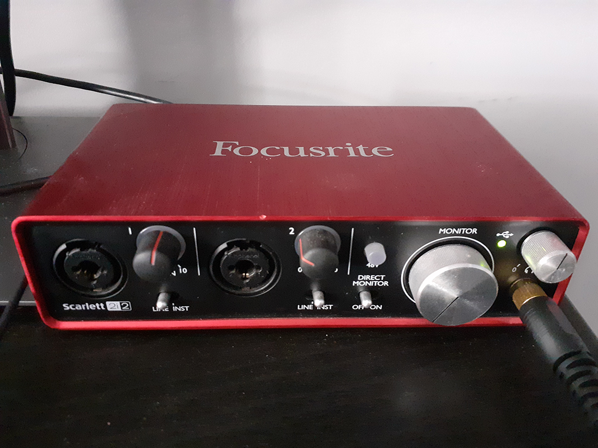
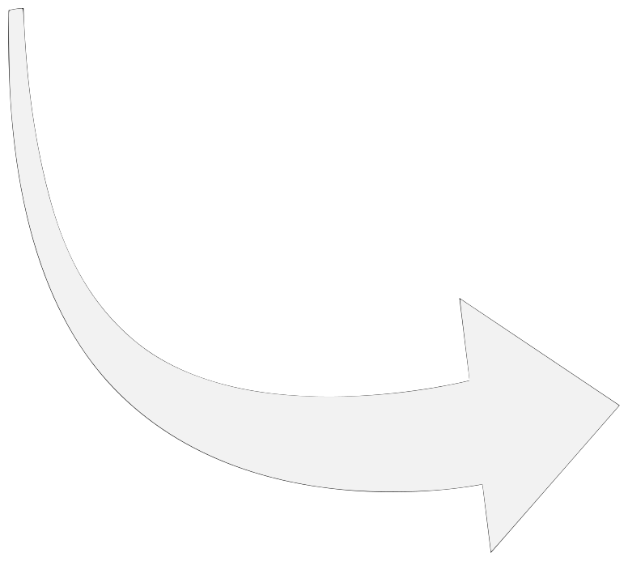
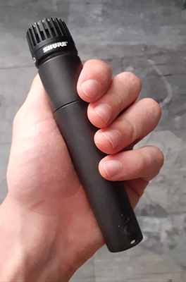
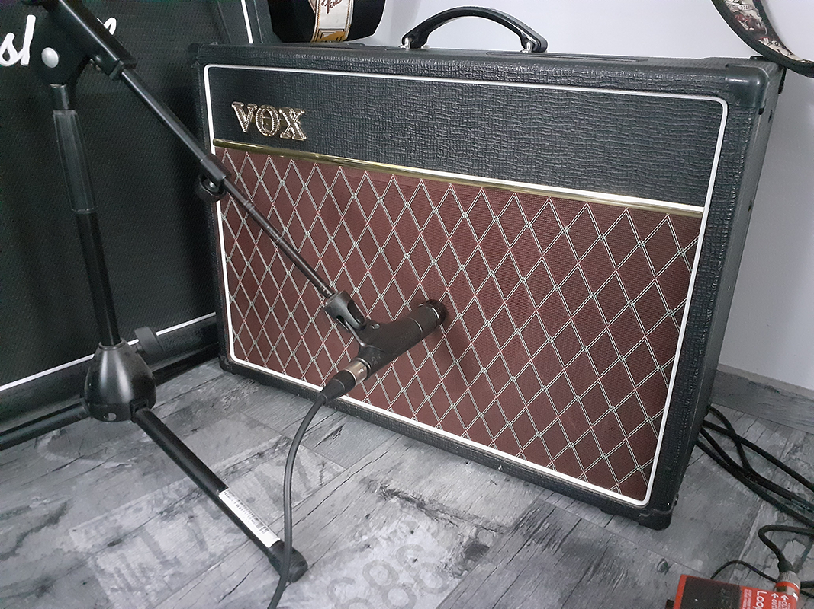

To su dinamički instrumentalni mikrofoni koji se koriste prvenstveno za ozvučavanje/snimanje instrumenata
Ozvučio sam gitarsko pojačalo tako da mikrofon gleda prema samom zvučniku te sam ga spojio direktno u zvučnu karticu
Za samo snimanje i produkciju koristit ću DAW Reaper budući da ima dosta jednostavno korisničko sučelje, besplatan je i imam prethodnog iskustva
The Hurricane
Slušalice su preporuka

Zvučna kartica


Mikrofon Shure SM57

Pojačalo za električnu gitaru
Kako bi ostvario svoj cilj, uz minimalno glazbene opreme, koristit ću ASIO drivere koji mi pružaju nizak latency i zadovoljavajuću kvalitetu zvuka
Uz standardne reaper audio FX plugine, koristit ću i plugine i virtualne instrumente firme MeldaProduction koji između ostalog nude i besplatan paket alata
Također htio bih ovdje dodati stranicu Sound Bible koja nudi mnoštvo besplatnih zvučnih efekta koji se jednostavno preuzmu i ubace u DAW
Dodao sam odgovarajuće ikonice i boje za svaku traku kako bi ih jasnije razlikovao, desni klik na traku → Track color → Track icon
Za svaku traku sam Record monitoring podesio na ON te sam namjestio odgovarajući input ovisno gdje mi je bio spojen mikrofon u zvučnoj kartici
Prije nego sam započeo sa snjimanjem na Transport traci sam podesio tempo na 71, a mjeru ostavio 4/4 kakva je i bila zadana
Sljedeći korak bio je podešavanje metronoma koji se nalazi u gornjem lijevom kutu. Aktivirao sam Count-in before recording kako bi metronom otkucao 2 dobre prije početka snimanja, također sam pojačao zvuk metronoma
Započeo sam sa akustičnom gitarom koju sam ozvučio sa AKG c1000s mikrofonom, glavni 'riff' sam izmislio ranije tako da sam brzo snimio uvod
Zatim sam dodao uvodnu električnu gitaru čije sam pojačalo snimio sa Shure SM57 mikrofonom
Zatim kako bi dobio bolje zvukove instrumenata, dodao sam efekte (prvo na akustičnu gitaru) na način da sam stisnuo FX ikonicu te sa liste izabrao MConvoluzionEZ gdje samo odabrao small room reverb
Također sam dodao MEqualizer te sam koristio preset za akustičnu gitaru te sam dodatno dignuo treble budući da je snimka bila pomalo mutna
Za kraj sam dodao MCompressor gdje sam također koristio preset za akustičnu gitaru, dodao sam kompresor kako bi izjednačio preglasne i pretihe dijelove snimke kako bi ispala bolja cijelina
Dalje sam dodao bubnjeve koje sam snimio pomoću klavijature
Na bubnjeve sam od efekata dodao kompresor i Drum room reverb koji imitra studijski prostor za snimanje bubnjeva
Dalje sam na uvodu dodao Obou koju sam također odsvirao preko klavijature
Na obou nisam dodavao posebnih efekata budući da mi se svidjela kako je zvučala sama po sebi
Naposlijetku sam dodao Bass, snimio sam ga također sa klavijaturom, njemu sam dodao kompresor koristeći preset za bass te sa mu sa EQ podigao niske frekvencije kako bi ton bio dublji i doimao se kao pravi bass
Uvodnoj električnoj gitari dodao sam fade in budući da je prvobitno bila prenagla, dok sam oboi dodao fade out kako bi ispala nježnija, u Reaperu se to jednostavno postiže vizualnim povlačenjem kraja trake za željenu količinu
Prije daljnjeg snimanja podesio sam PAN akustične gitare 80% na desno uho, električne gitare 100% na lijevo uho, bass i bubanj sam ostavio na sredini a obou sam stavio 33% na lijevo
Dalje sam snimao sredinu gdje sam dodao za svaki instruemnt po još jednu traku za sve instrumente a za akustičnu gitaru još 2 kako bi lakše snimao budući da je bilo dosta ispravljanja, ubacivanja i presnimavanja
Na kraju sam dodao SFX traku u koju sam ubacivao sound efekte (vjetar na početku, pucnjava i vrisak pri kraju pjesme)
Na kraju sam dodao fade out na sve trake tako da pjesma završava postupnim stišavanjem, dodatno sam mnoge trake stišavao, pojačavao, te dodavao sitne fade out/fade in efekte
Na kraju je trebalo obraditi master traku, nju prvo treba prikazati tako da se ide na View → i omogući Master track
Mastering sam odradio tako što sam dodao reaperov ReaComp kompresor i dodao mrvicu kompresije
Dalje, koristio sam ReaEQ plugin pomoću kojeg sam otklonio jako niske frekvencije (40Hz) te sam podigao frekvencije na 300Hz za 2dB, također sam visoke frekvencije (od 3500Hz) podigao za 1dB
Na kraju sam stavio najglasniji dio pjesme te sam dodao Master Limiter i smanjivao Threshold kako bi maksimalno dobio na glasnoći mixa prije distorziranja zvuka, uspio sam pojačati mix za 5.3 dB
Na kraju sam jednostavno exportao tako što sam išao na File → Render, odabrao sam da rendera cijeli mix i renderao dvaput. U WAV i MP3 formatima